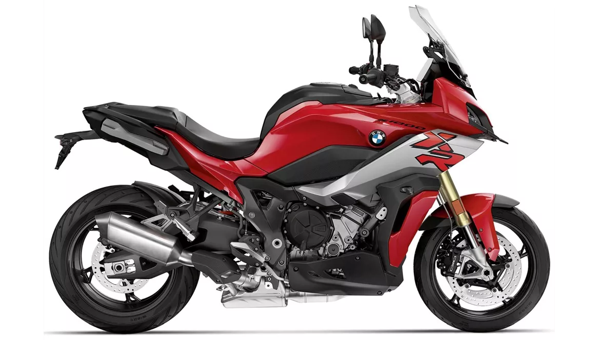
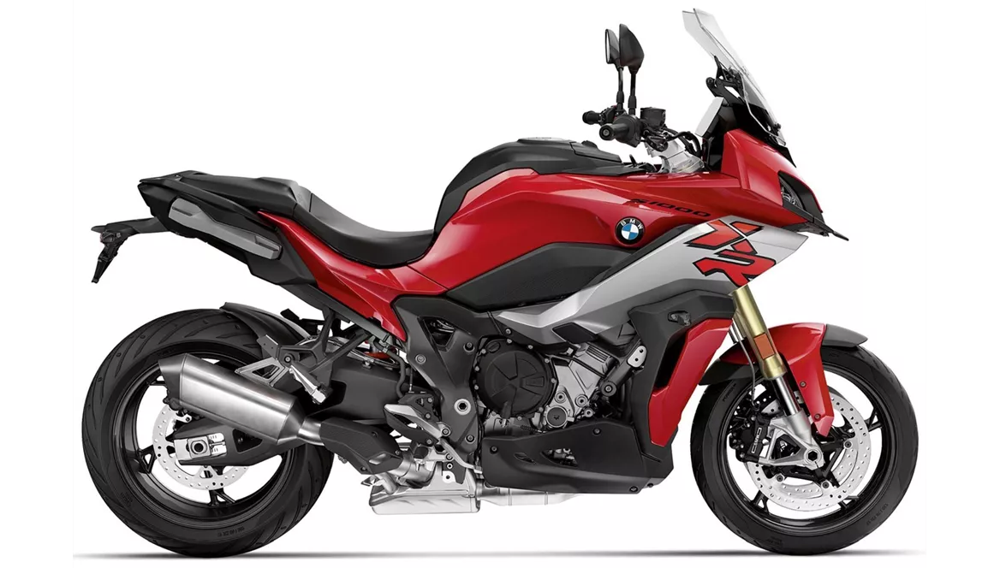

BMW S1000XR to wszechstronny motocykl z segmentu adventure sport, łączący cechy sportowych maszyn z wygodą i funkcjonalnością motocykli turystycznych. Poniżej znajduje się krótki opis tego modelu:
-
1. Silnik
Czterocylindrowy, rzędowy silnik o pojemności 999 cm³, który bazuje na jednostce napędowej z modelu S1000RR. Zapewnia wysoki poziom osiągów i dynamiczne przyspieszenie.
-
2. Moc i moment obrotowy
Generuje około 165 KM mocy i 114 Nm momentu obrotowego, co pozwala na bardzo szybkie przyspieszenie i wysokie prędkości maksymalne.
-
3. Rama i zawieszenie
Aluminiowa rama o sportowym charakterze, połączona z wysokiej klasy zawieszeniem, które może być regulowane elektronicznie (Dynamic ESA). Zapewnia to doskonałą stabilność i komfort jazdy zarówno na asfaltowych drogach, jak i w lekkim terenie.
-
4. Design
Agresywny i nowoczesny wygląd z aerodynamicznymi kształtami. Wyposażony w LED-owe reflektory i nowoczesny zestaw wskaźników, często z dużym kolorowym wyświetlaczem TFT.
-
5. Ergonomia
Wysoka pozycja siedzenia i ergonomicznie zaprojektowane elementy sterujące zapewniają wygodę podczas długich podróży. Dodatkowo, regulowana szyba i opcjonalne kufry boczne zwiększają funkcjonalność.
-
6. Hamowanie
Wysokiej klasy układ hamulcowy z dwoma dużymi tarczami z przodu i jedną tarczą z tyłu, wspierany przez systemy ABS i DBC (Dynamic Brake Control).
BMW S1000XR to motocykl, który doskonale łączy osiągi sportowego superbike'a z komfortem i funkcjonalnością motocykla turystycznego. Idealny dla osób poszukujących maszyny zdolnej do szybkiej jazdy po krętych drogach oraz długich podróży z dużą dawką komfortu i bezpieczeństwa.

 
